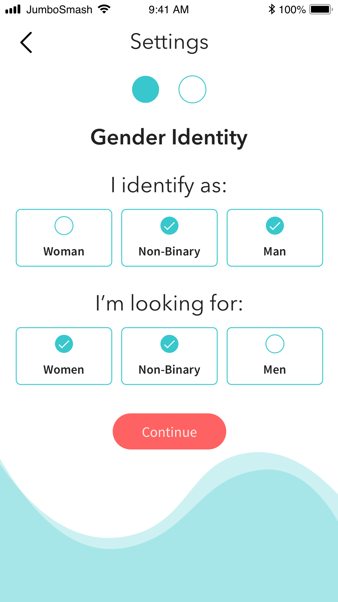
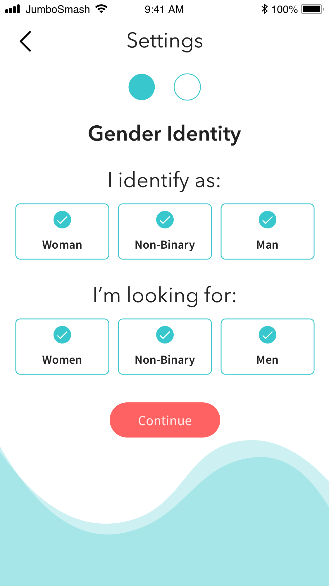

Thanks for reading our Statement on Gender! As a team, our top priority is to build an app that will empower all Tufts seniors to have a safe, inclusive, and enjoyable experience on JumboSmash during their final semester at Tufts. The following is an explanation of the choices we made when designing the app and of how the team thinks about gender.
When you set up your profile in JumboSmash, you’re asked to indicate:
There are three options for each question: woman, non-binary, and man. These options are not mutually exclusive, and users are welcome to choose as many as they like. The three options are used to show you profiles based on your gender preferences.
You are shown profiles of people who:
Essentially, that means that all swiping in JumboSmash occurs between people who have selected compatible identities and preferences.
If you identify as NON-BINARY, MAN and indicate that you are interested in WOMEN & NON-BINARY, then you will see anyone who has non-binary and/or man in their gender preferences.
So, for instance, the person with the settings shown above would see both of these users, in addition to others:
Your gender identity & preferences are only visible to you. For more info on who will see you while swiping, please refer to the “What are these used for?” section.
If you feel comfortable, feel free to put your pronouns, gender identity, and/or any other information about the way you identify in your bio. We encourage you to express yourself to whatever degree you wish in your profile.
Yes! These options are not mutually exclusive, and users are welcome to choose as many as they like. These preferences can be changed at any time from the settings page, and they will never be shown to anyone else on JumboSmash. For examples and more information, please refer to the “What are these used for?” section.
We’ve designed swiping on JumboSmash to be an intentful, comfortable, and safe experience. We recognize that gender is spectrum, and encourage you to select whatever combination of identities represents how you would like to swipe on JumboSmash.
We have chosen to limit the amount of options to the three available to prevent targeting on the application. Allowing users to filter by inputtable gender identities would allow for very specific targeting based on gender identity, which could make JumboSmash unsafe for gender minorities. This is not a risk we are willing to take.
If you’d rather skip the filtering so that you can see and be seen by everyone, you can do that! Just select all three gender identities and all three gender preferences, and you’ll be able to swipe on all JumboSmash users.
We encourage you to interpret these options however makes sense to you, regardless of your assigned gender at birth, or societal beliefs about gender. We believe that what matters is that you choose what makes you most comfortable!